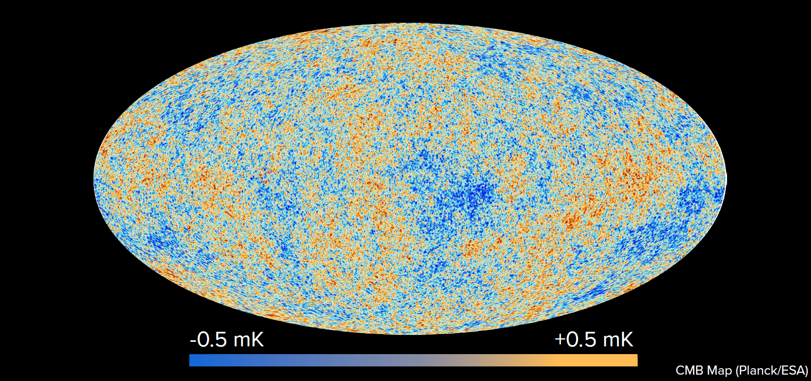

# En*lightening* the search for Dark Matter <br> ## Ben Roberts <div class="r-stretch"></div> <img src="img/uq-logo.svg" width="30%"> <br><br>
# The Standard Model + General Relativity <br> <div style="text-align: center; float: left; width: 50%"> <img src="https://upload.wikimedia.org/wikipedia/commons/2/2b/Standard_Model_of_Elementary_Particles_dark.svg" width="95%"> <font size="3"> Credit: Cush [Wikimedia Commons]</font> </div> <div style="text-align: left; float: right; width: 47%"> <h2>Tested with extraordinary precision</h2> <br> <h3> • e.g., electron magnetic moment, Higgs boson</h3> <h3> • gravitational lensing, gravitational waves</h3> <br><br><br> <h2>However...</h2> <br><br><br> <div class="fragment"> <h2>Several deep inconsistencies</h2> <h2>with the observed universe</h2> </div> <!-- <p data-markdown>• Tested across vast scales with extreme precision</p> <br> <p data-markdown>• This is my first right element</p> --> </div>
# Unexplained mysteries
# Focus: dark matter <br> <div style="text-align: center; float: left; width: 35%"> <br><br><br> <h3>Coma Cluster</h3> <br> <img src="https://upload.wikimedia.org/wikipedia/commons/7/7d/Ssc2007-10a1.jpg" width="95%"> <font size="3"> Sloan Digital Sky Survey + Spitzer Space Telescope [NASA / JPL-Caltech / L. Jenkins]</font> </div> <div style="text-align: left; float: right; width: 47%"> <h2>Brief History</h2> <br><br><br> <div class="fragment"> <h2>Several deep inconsistencies</h2> <h2>with the observed universe</h2> </div> </div> <!-- ### • Rotation Curves ### • Galaxy Clusters ### • Gravitational Lensing ### • Cosmic Microwave Background ### • Large Scale structure ### • BAO: Baryon Acoustic Oscillations ### • more -->
# Galactic Rotation Curves <!-- <video data-autoplay loop width="80%" type="video/webm" src="https://upload.wikimedia.org/wikipedia/commons/4/4c/Comparison_of_rotating_disc_galaxies_in_the_distant_Universe_and_the_present_day.webm"></video> --> <video width="80%" controls playsinline autoplay muted loop> <source src="https://upload.wikimedia.org/wikipedia/commons/4/4c/Comparison_of_rotating_disc_galaxies_in_the_distant_Universe_and_the_present_day.webm" type="video/webm"></video> <font size="3">Credit: ESO/L. Calçada [Creative Commons]</font>
# Galactic Rotation Curves <!-- <img src="https://upload.wikimedia.org/wikipedia/commons/c/cd/Rotation_curve_of_spiral_galaxy_Messier_33_%28Triangulum%29.png" width="80%"> <font size="3"> Credit: Mario De Leo [Wikimedia Commons]</font> --> <div style="text-align: center; float: left; width: 70%"> <br><br> <img src="https://upload.wikimedia.org/wikipedia/commons/c/cd/Rotation_curve_of_spiral_galaxy_Messier_33_%28Triangulum%29.png" width="95%"> <font size="3"> Credit: Mario De Leo [Wikimedia Commons]</font> </div> <div style="text-align: left; float: right; width: 30%"> <br><br> <h2>Missing Matter?</h2> <br> <p data-markdown>• Not a small correction</p> <br> <p data-markdown>• 80 - 95% of mass is "missing"</p> <br> <p data-markdown>• Implies dark matter</p> <br> <p data-markdown>• ... or modified gravity</p> </div>
# Bullet Cluster <img src="https://upload.wikimedia.org/wikipedia/commons/e/ea/Bullet_cluster.jpg" width="80%">
# Bullet Cluster <img src="https://upload.wikimedia.org/wikipedia/commons/a/a8/1e0657_scale.jpg" width="80%">
# Cosmic Microwave Background 
# Cosmic Microwave Background <iframe width="100%" height="70%" data-src="https://chrisnorth.github.io/planckapps/Simulator/"> </iframe> Credit: Chris North (Cardiff U.) - <a href="https://chrisnorth.github.io/planckapps/Simulator/"> chrisnorth.github.io/planckapps/Simulator</a> <br><br>
# Dark Matter: What we don't know <br> ## ... everything else <br> <!-- <img src="img/DM_masses2.png" width="80%"> --> <div class="r-stack"> <img class="fragment fade-out" data-fragment-index="0" src="img/DM_masses2.png" width="80%"> <img class="fragment current-visible" data-fragment-index="0" src="img/DM_masses3.png" width="80%"> </div> <br> <br> ### • Possible mass range: 90 orders of magnitude! <br> ### • Vast majority of focus on WIMPs, but field is very wide
# WIMP miracle <!-- <div class="r-stack"> <img class="fragment fade-out" data-fragment-index="0" src="img/DM_masses2.png" width="80%"> <img class="fragment current-visible" data-fragment-index="0" src="img/DM_masses3.png" width="80%"> </div> <div style="text-align: center; width: 50%"> <img src="img/Feynman.png" width="85%"> </div> --> <div style="text-align: left; float: left; width: 30%"> <br><br> <img src="img/Feynman.png" width="95%"> <br><br> <h3> • Early universe: hot and dense</h3> <h3> DM Begins in thermal equilibrium</h3> <br> <h3 class="fragment fade-in" data-fragment-index="0"> • Universe cools: <br> Boltzmann suppression </h3> <br> <h3 class="fragment fade-in" data-fragment-index="1"> • Universe expands: <br> Shuts off annihilation </h3> <!-- <br> <h3 class="fragment fade-in" data-fragment-index="2"> • Begins in thermal equilibrium </h3> --> </div> <div style="text-align: center; float: right; width: 65%"> <div class="r-stack"> <img class="fragment fade-in" data-fragment-index="0" src="img/YDM/Yeq.png" width="90%"> <img class="fragment fade-in" data-fragment-index="1" src="img/YDM/YDM1.png" width="90%"> <img class="fragment fade-in" data-fragment-index="2" src="img/YDM/YDM2.png" width="90%"> </div> <h3 class="fragment fade-in" data-fragment-index="3"> • Weak interaction ($G_F \simeq 10^{-5}\,{\rm GeV}^{-2}$): new physics scale<br> • $m_{\rm weak} \simeq 100\,{\rm GeV}$ <br> </h3> <h3 class="fragment fade-in" data-fragment-index="4"> • $\langle\sigma v\rangle_{\rm weak} \simeq 3\times10^{-26}\,{\rm cm}^3/{\rm s}$ !!! </h3> </div>
# WIMP Searches: XENON <div style="text-align: center; float: left; width: 50%"> <img src="img/xenon.png" width="55%"> </div> <div style="text-align: left; float: right; width: 50%"> <br> <img src="img/Feynman.png" width="40%"> <br> <h2>...</h2> </div>
# WIMP Constraints
# Atomic Physics: ## En*lightening* the search for Dark Matter
# Light "WIMPs": electron ionisation
# Absorption: Dark photoelectric effect
# Light and Ultralight Dark Matter
# Atomic Clocks 101:
# Scattering in atomic clocks
# Effective variation of fundamental constants
# Oscillating signals
# Transient Signals
# GPS.DM <!-- loop --> <video width="50%" data-autoplay muted> <source src="img/GPSDM.mp4"></video>
# European Fibre-linked network <video width="50%" data-autoplay muted loop> <source src="img/GPSDM.mp4"></video>